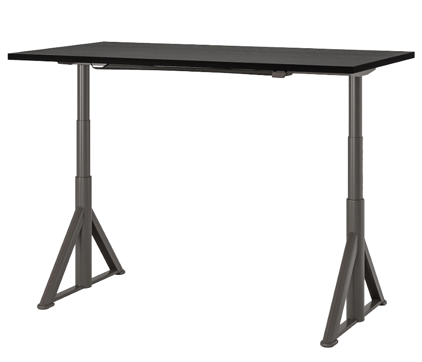

<ion-header [translucent]="true">
  <ion-toolbar>
    <ion-title>
      Idasen-Controller Page
    </ion-title>
  </ion-toolbar>
</ion-header>

<ion-content [fullscreen]="true" [scrollX]="false">
  <div class="content-wrapper">

    <div class="memory-button-wrapper">
      <ion-fab-button
        (click)="memoryButtonClicked('position1')"
        [color]="this.memoryEnabled ? 'secondary':'primary'">{{this.positions?.position1 + 60 || '-'}}</ion-fab-button>
      <ion-fab-button
        (click)="memoryButtonClicked('position2')"
        [color]="this.memoryEnabled ? 'secondary':'primary'"
      >{{this.positions?.position2 + 60 || '-'}}</ion-fab-button>
      <ion-fab-button
        (click)="memoryButtonClicked('position3')"
        [color]="this.memoryEnabled ? 'secondary':'primary'">{{this.positions?.position3 + 60 || '-'}}</ion-fab-button>
    </div>


    <div class="desk-image-wrapper" #deskPicture>
      
    </div>

    <div class="height-slider-wrapper">
      <div class="height-slider-value">
        <ion-chip outline="true" [color]="'secondary'">
          <ion-label>{{(this.sliderValue + 60 || '-') + ' cm'}}</ion-label>
        </ion-chip>
        <ion-button size="small" style="margin-top: 0.4rem"
                    (click)="this.memoryEnabled = !this.memoryEnabled"
                    [color]="memoryEnabled? 'danger': 'secondary'"
        >{{this.memoryEnabled ? 'abort':'save as memory'}}
        </ion-button>
      </div>


      <ion-item lines="none">
        <ion-range min="7" max="58" color="primary" debounce="20"
                   (click)="heightSliderClicked($event)"
                   [ngModel]="sliderValue"
        >
          <ion-label slot="start">{{7 + 60}}</ion-label>
          <ion-label slot="end">{{58 + 60}}</ion-label>
        </ion-range>
      </ion-item>
    </div>
  </div>


</ion-content>
